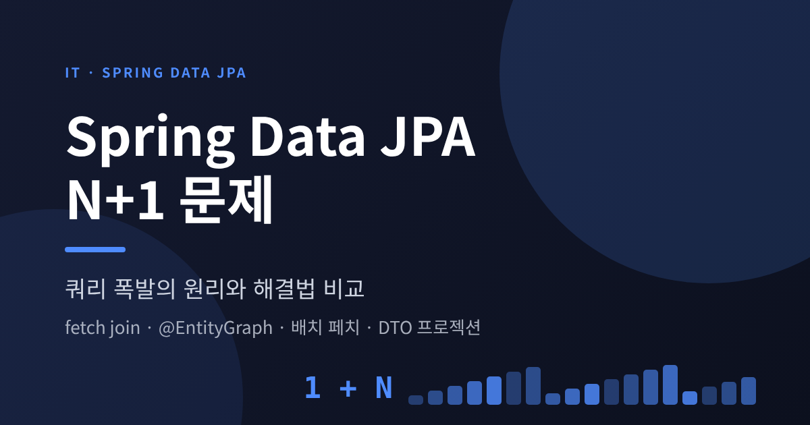
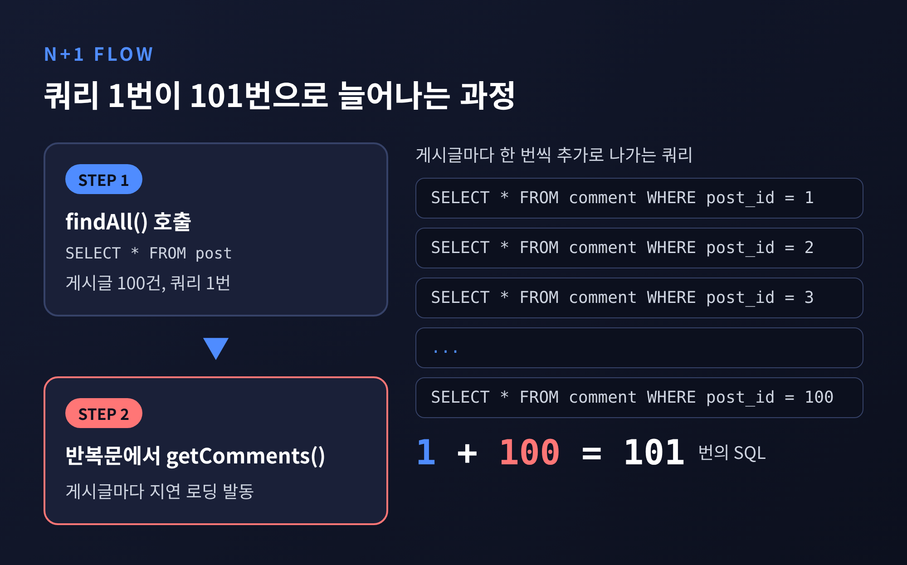
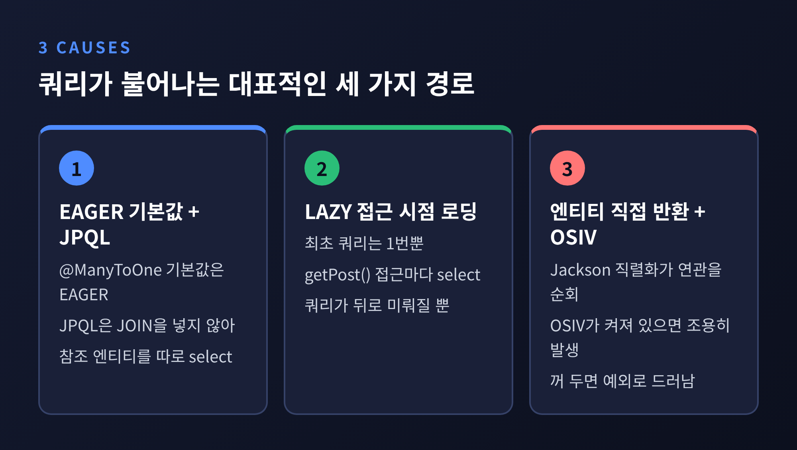
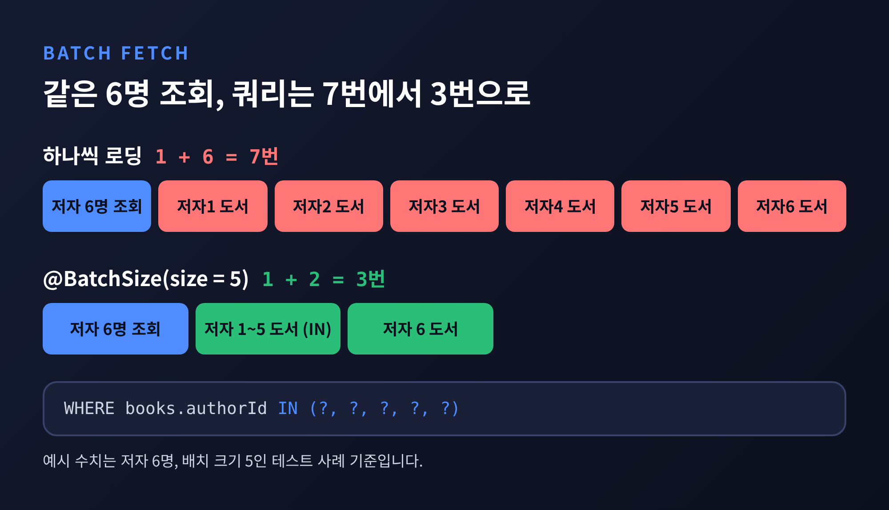
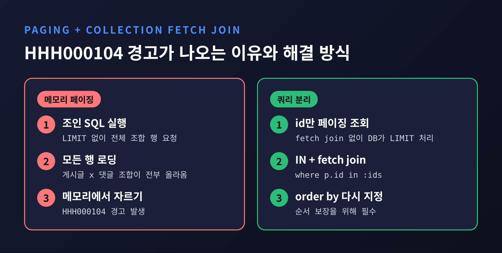
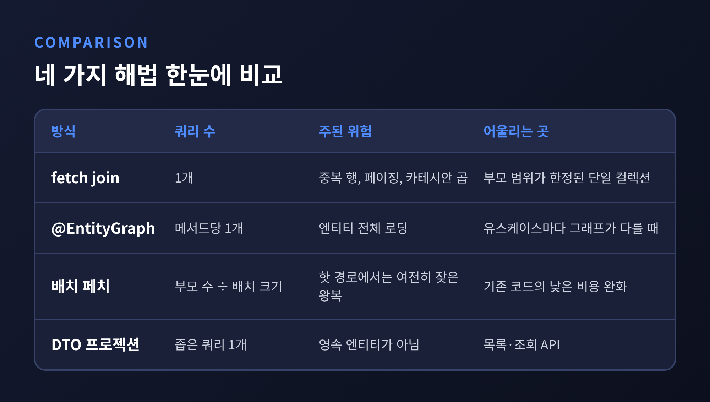

이번 글에서는 Spring Data JPA의 N+1 문제를 정리해 보겠습니다. 지연 로딩이 어떻게 쿼리 폭발로 번지는지 살펴보고, fetch join·@EntityGraph·배치 페치·DTO 프로젝션 네 가지 해법을 비교합니다.
세 줄로 먼저 답하면 이렇습니다.
N+1은 한 번의 쿼리로 가져올 수 있었던 데이터를 위해 N번의 쿼리가 더 나가는 현상입니다. 전체 SQL은 1+N개가 됩니다.
게시글 목록을 조회한 뒤 게시글마다 댓글 수를 세는 코드를 떠올려 보시면 됩니다.
@Entity
class Post {
@Id @GeneratedValue Long id;
String title;
@OneToMany(mappedBy = "post") // 기본값은 LAZY
List<Comment> comments = new ArrayList<>();
}
List<Post> posts = postRepository.findAll(); // 쿼리 1번
for (Post p : posts) {
log.info("{}", p.getComments().size()); // 게시글마다 쿼리 1번씩
}
게시글이 100건이라면 쿼리는 101번 나갑니다. 1,000건이라면 1,001번입니다.
문제는 개별 쿼리가 모두 빠르다는 점입니다. 슬로우 쿼리 로그에는 한 줄도 남지 않습니다. 쿼리 수가 행 수에 비례해 늘어나므로, 로컬의 10건에서는 보이지 않다가 운영 데이터에서 DB CPU와 커넥션 풀이 먼저 비명을 지릅니다.

EAGER로 바꾸면 해결될 것 같지만, 그렇지 않습니다.
@ManyToOne과 @OneToOne의 JPA 기본값은 EAGER입니다. 그런데 JPQL이나 Criteria 쿼리는 엔티티의 기본 fetch 계획을 따르지 않습니다. JOIN을 넣어 주지 않습니다. 그래서 select c from Comment c를 실행하면 댓글 조회 1번에, 참조된 게시글을 읽는 쿼리가 따로 나갑니다. 게시글 4건을 참조하는 예에서는 총 5번입니다.
LAZY로 바꾸면 최초 쿼리는 한 번뿐입니다. 대신 comment.getPost()에 접근하는 순간마다 select가 나갑니다. 쿼리가 사라진 것이 아니라 뒤로 미뤄졌을 뿐입니다.
실무에서는 여기에 두 가지 요인이 더해집니다. 컨트롤러가 엔티티를 그대로 반환하면 Jackson 직렬화가 지연 연관을 따라가며 쿼리를 쏟아냅니다. OSIV가 켜져 있으면 이 현상이 서비스 계층 밖에서 조용히 일어납니다. OSIV를 꺼 두면 같은 코드가 LazyInitializationException으로 바로 드러납니다. 그래서 OSIV를 끄고 트랜잭션이 있는 서비스 계층 안에서 필요한 데이터를 모두 읽으라는 권고가 나옵니다.
정리하면, 기본은 LAZY로 두고 필요한 연관을 쿼리 단위로 명시해서 가져오는 쪽이 안전합니다.

가장 먼저 쓰는 해법은 연관을 처음 쿼리에 함께 실어 보내는 방식입니다.
@Query("select c from Comment c join fetch c.post")
List<Comment> findAllWithPost();
SQL이 INNER JOIN 한 번으로 끝납니다. 앞서의 예시도 5번이 1번으로 줄어듭니다.
Spring Data JPA에서는 JPQL을 직접 쓰지 않고 @EntityGraph로도 같은 효과를 냅니다.
public interface CommentRepository extends JpaRepository<Comment, Long> {
@EntityGraph(attributePaths = {"post"})
List<Comment> findByPostIdIn(List<Long> postIds);
}
attributePaths로 지정한 속성은 EAGER처럼, 나머지는 LAZY로 취급됩니다(기본 type인 FETCH 기준). 매핑은 LAZY로 유지한 채 메서드마다 fetch 계획을 다르게 선언할 수 있다는 점이 장점입니다. JPQL을 중복해서 쓸 필요도 없습니다.
한계도 분명합니다.
MultipleBagFetchException이 발생합니다. 이 예외는 쿼리를 만드는 시점에 나므로 @Query라면 애플리케이션 기동에서 실패합니다.컬렉션이 둘이라면 쿼리를 나누는 편이 맞습니다. 첫 쿼리로 게시글과 댓글을 가져오고, 같은 영속성 컨텍스트 안에서 두 번째 쿼리로 where p in :posts 조건의 태그를 가져옵니다. 이미 올라와 있는 엔티티의 컬렉션이 채워집니다.
컬렉션 fetch join이 부담스러울 때는 배치 페치가 대안이 됩니다. 연관을 하나씩 읽지 않고, 필요한 키를 모아 IN 조건으로 한꺼번에 읽는 방식입니다.
@OneToMany(mappedBy = "post")
@BatchSize(size = 100)
List<Comment> comments = new ArrayList<>();
전역으로는 hibernate.default_batch_fetch_size를 쓰며, Spring Boot에서는 spring.jpa.properties. 접두어를 붙여 application.yml에 넣습니다. 기본적으로 Hibernate는 @BatchSize가 명시된 곳에만 배치 페치를 적용하므로, 전역 설정을 켜야 모든 연관에 번집니다. 여기서 100은 예시일 뿐이며, 적정 크기를 제시한 공식 자료는 확인하지 못했습니다. 데이터와 DB에 맞춰 측정해서 정하는 편이 좋겠습니다.
동작은 이렇습니다. 첫 게시글의 댓글에 접근하는 순간, 세션에 올라와 있는 미초기화 컬렉션들의 키를 모아 IN 쿼리 한 번으로 초기화합니다.
한 사례를 보겠습니다. 저자 6명을 읽고 @BatchSize(size = 5)를 건 경우, 첫 저자의 도서 목록에 접근할 때 1~5번 저자를 묶은 쿼리가 한 번 나갑니다. 6번 저자는 단건 쿼리입니다. 최초 조회까지 합쳐 3번입니다. 하나씩 읽었다면 7번(1+6)이었을 것입니다.
쿼리 수는 대략 부모 수를 배치 크기로 나눈 만큼으로 줄어듭니다. 매핑을 거의 건드리지 않고 기존 코드에 적용할 수 있다는 점이 강점입니다.
다만 한계도 있습니다. 전용 쿼리로 처음부터 함께 가져오는 것보다는 느리고, 핫한 API의 장기 설계로 삼기에는 부족하다는 평가가 있습니다. 완화책이지 해결책은 아니라는 뜻입니다.

화면에 필요한 값이 정해져 있다면 엔티티를 거치지 않는 것이 가장 확실합니다.
public record PostSummary(Long id, String title, long commentCount) {}
@Query("""
select new com.example.PostSummary(p.id, p.title, count(c))
from Post p left join p.comments c
group by p.id, p.title
""")
List<PostSummary> findSummaries();
필요한 컬럼만 select하므로 SQL이 작고 메모리 사용이 적습니다. 영속 엔티티가 아니니 우발적인 지연 로딩이 원천적으로 일어나지 않습니다.
Spring Data JPA는 인터페이스 기반과 클래스 기반(DTO, record) 프로젝션을 모두 지원합니다. 접근자가 모두 엔티티 속성과 일치하는 closed 프로젝션은 필요한 속성을 미리 알기에 쿼리를 최적화할 수 있습니다. 반면 SpEL을 쓰는 open 프로젝션은 최적화되지 않습니다.
주의할 점이 있습니다. 중첩 프로퍼티가 조인으로 풀리면 중첩 대상 전체가 선택되어, 중첩 프로젝션이 조인 데이터를 줄여 주지 않습니다. JPQL 생성자 표현식에는 별칭을 붙이면 안 됩니다. 또 DTO는 영속 엔티티가 아니라서 값을 바꿔 저장하는 용도로는 쓸 수 없습니다.
가장 자주 만나는 함정이 여기입니다. 게시글을 페이지 단위로 조회하면서 댓글까지 fetch join하면 이런 로그를 보게 됩니다.
HHH000104: firstResult/maxResults specified with collection fetch; applying in memory!
@Query("select p from Post p left join fetch p.comments")
Page<Post> findAllWithComments(Pageable pageable); // 메모리 페이징 발생
원인은 SQL의 구조에 있습니다. 컬렉션을 조인하면 DB는 게시글이 아니라 게시글과 댓글의 조합마다 한 행을 돌려줍니다. 여기에 LIMIT를 걸면 엔티티가 아니라 조합 행의 개수를 세게 됩니다. 한 게시글의 댓글이 중간에서 잘릴 수도 있습니다.
그래서 Hibernate는 SQL에 LIMIT를 붙이지 않습니다. 조인 결과를 전부 읽어 온 뒤 메모리에서 잘라 냅니다. 결과는 정확합니다. 하지만 테이블이 크면 수천 행이 로딩되고, 쿼리가 느려지고, 메모리가 늘어납니다.
예전엔 경고 한 줄로 지나쳤습니다. 지금은 이 경고를 에러로 바꿀 수 있습니다.
spring:
jpa:
properties:
hibernate:
query:
fail_on_pagination_over_collection_fetch: true
이 속성을 켜면 경고 대신 HibernateException이 발생하며, Hibernate 5.2.13부터 사용할 수 있습니다. 테스트 단계에서 실수를 잡는 용도로 알맞습니다.
해결은 두 갈래입니다.
where p.id in :ids와 컬렉션 fetch join으로 엔티티를 읽습니다. 두 번째 쿼리에는 order by를 다시 지정해야 순서가 보장됩니다.IN 쿼리로 가져옵니다. 이는 위의 개념을 조합한 필자의 정리이며, 쿼리 수는 부모 수를 배치 크기로 나눈 정도로 늘어납니다.Page<Long> ids = postRepository.findPostIds(pageable); // LIMIT는 DB에서
List<Post> posts = postRepository.findWithComments(ids.getContent()); // IN + fetch join
Hibernate 6에서는 윈도 함수로 한 쿼리에 처리하는 방법도 소개되어 있습니다. 다만 코드가 복잡해지므로, 이 글에서는 이름만 언급하겠습니다.

| 방식 | 쿼리 수 | 주된 위험 | 어울리는 곳 |
|---|---|---|---|
| fetch join | 1개 | 중복 행, 페이징, 카테시안 곱 | 부모 범위가 한정된 단일 컬렉션 |
| @EntityGraph | 메서드당 1개 | 엔티티 전체 로딩 | 유스케이스마다 그래프가 다를 때 |
| 배치 페치 | 부모 수 ÷ 배치 크기 정도 | 핫 경로에서는 여전히 잦은 왕복 | 기존 코드의 낮은 비용 완화 |
| DTO 프로젝션 | 좁은 쿼리 1개 | 영속 엔티티가 아님 | 목록·조회 API |

제가 권하는 순서는 이렇습니다. 읽기 전용 화면이라면 DTO 프로젝션부터 검토하십시오. 엔티티가 필요하고 연관이 단건이라면 @EntityGraph나 fetch join을 쓰십시오. 컬렉션이 얽히고 페이징이 필요하다면 쿼리를 나누거나 배치 페치를 쓰십시오. 어느 쪽이든 요청당 쿼리 수를 테스트로 고정해 두어야 같은 문제가 다시 생기지 않습니다. 쿼리 수가 예산을 넘으면 CI가 실패하도록 두는 방식이 권장됩니다.
한계도 인정해야 합니다. 이 글의 쿼리 수는 설명용 예시이며 실측 벤치마크가 아닙니다. 실제 효과는 데이터 분포와 DB, 인덱스 상태에 따라 달라집니다.
정리하면 이렇습니다.
"N+1은 코드가 아니라 데이터를 어떻게 가져올지 정하지 않은 데서 생깁니다."
연관을 LAZY로 두는 것은 시작일 뿐이고, 화면마다 무엇을 읽을지 직접 정하는 것이 끝입니다. 다음에 쿼리 로그가 비슷한 문장으로 가득 찬 것을 보신다면, 가장 먼저 반복문 안의 getter부터 의심해 보시길 권합니다.